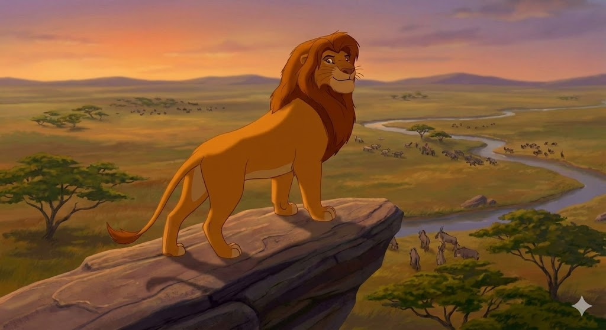
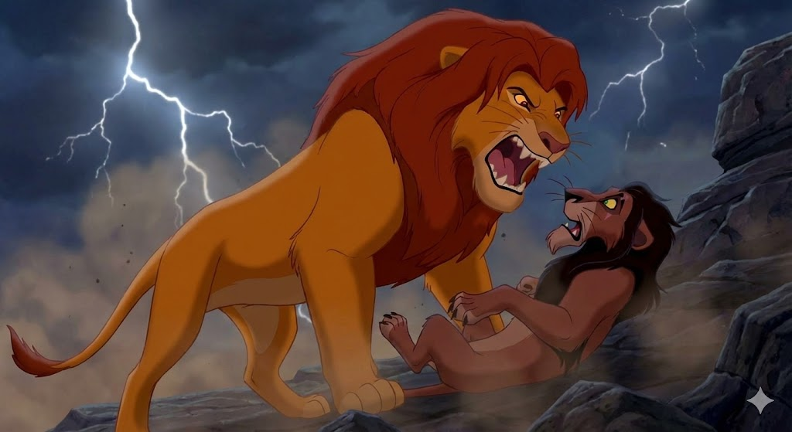

wb_sunny אסתטיקה של "הטוב"
מופאסה מעוצב כדמות המייצגת את הטוב המוחלט והיציבות. הצבעים השולטים בדמותו ובסביבתו הם צבעים חמים: זהב, כתום וצהוב. הרעמה שלו מזכירה את השמש.
מבחינת זווית צילום, מופאסה מצולם פעמים רבות בזווית נמוכה (Low Angle). בניגוד לסקאר (שם זה נראה מאיים), אצל מופאסה הזווית נועדה לעורר יראת כבוד, הערצה ותחושת ביטחון של דמות אב גדולה ומגוננת.

public גלגל החיים כאידיאולוגיה
המסר המרכזי שמופאסה מעביר לסימבה הוא "גלגל החיים" (The Circle of Life). לכאורה, זהו הסבר ביולוגי יפה על הטבע. אך מנקודת מבט ביקורתית, זוהי אידיאולוגיה שנועדה להצדיק את הסדר החברתי הקיים.
מופאסה מסביר שאמנם האריות אוכלים את האנטילופות, אך "אנחנו הופכים לעשב, והן אוכלות את העשב". הסבר זה משמש להצדקת השלטון והכוח של החזקים (האריות) על החלשים, וגורם למצב הקיים (ההיררכיה) להיראות טבעי, צודק ובלתי ניתן לערעור.
movie צפו: גלגל החיים
סצנת הפתיחה האייקונית של הסרט מדגימה באופן חזותי מושלם את הרעיון של "גלגל החיים" וההיררכיה הטבעית. שימו לב כיצד כל החיות מתכנסות ומשתחוות בפני המלך לעתיד, והשמש המאירה שמסמלת את הלגיטימציה האלוהית לשלטון האריות. השיר עצמו נועד לגרום לצופה להרגיש התעלות ולקבל את הסדר החברתי הזה בהערצה.

fitness_center מודל הגבריות ההגמוני
מופאסה מייצג את הגבר ה"אידיאלי" בתרבות המערבית: חזק פיזית, שרירי, בעל קול עמוק וסמכותי (ג'יימס ארל ג'ונס), מגן על משפחתו ושולט בטריטוריה.
הוא עומד בניגוד מוחלט לסקאר ה"נשי" והחלש פיזית. בכך הסרט מחזק סטריאוטיפים מגדריים שלפיהם מנהיגות "נכונה" מחייבת כוח פיזי ותכונות גבריות מסורתיות.
psychology דילמה: חינוך או שטיפת מוח?
הסרט מלמד ילדים ש"ככה העולם עובד" (גלגל החיים). האם זהו שיעור חשוב על הטבע, או דרך להרגיל ילדים לקבל אי-שוויון חברתי כדבר טבעי?
גישה א': זהו מסר חיובי
הסרט מלמד אחריות, כבוד לטבע והבנה שלכל יצור יש תפקיד במערכת האקולוגית. זהו חינוך לאחריות סביבתית.
גישה ב': זהו מסר פוליטי סמוי
הסרט מחנך ילדים שיש "שליטים" ויש "נשלטים" מלידה, ושמצב זה הוא "טבעי" ואין למרוד בו (הגמוניה).